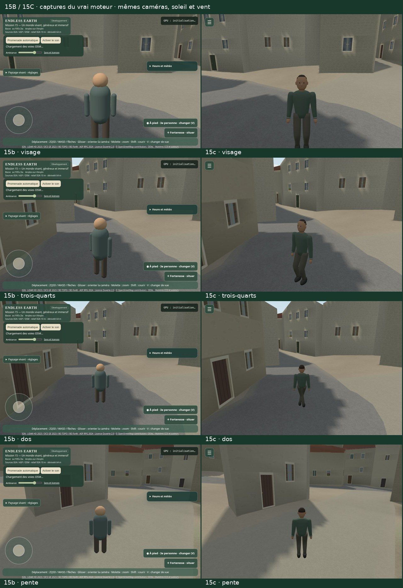
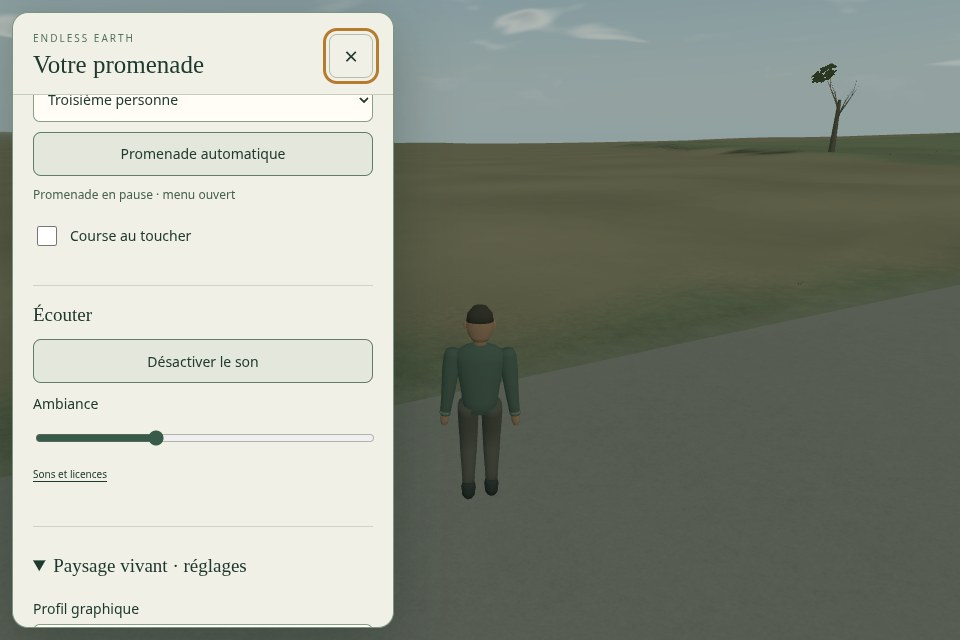
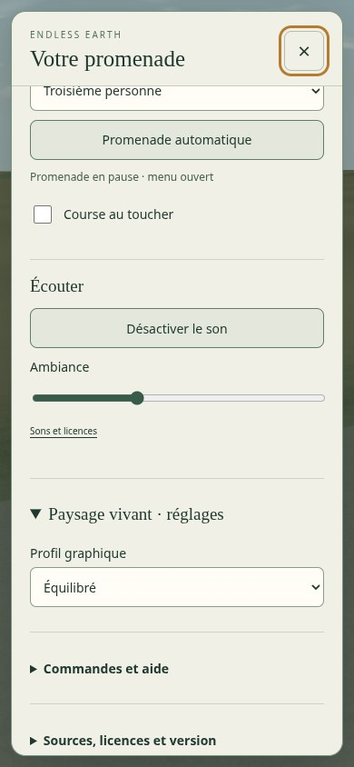
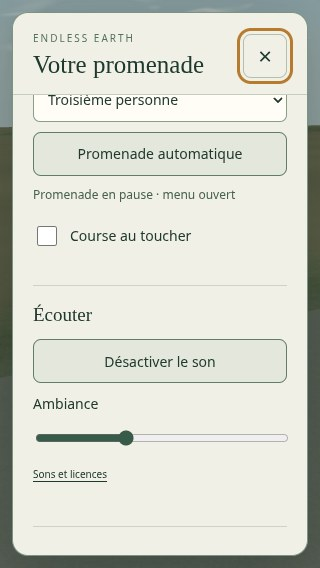
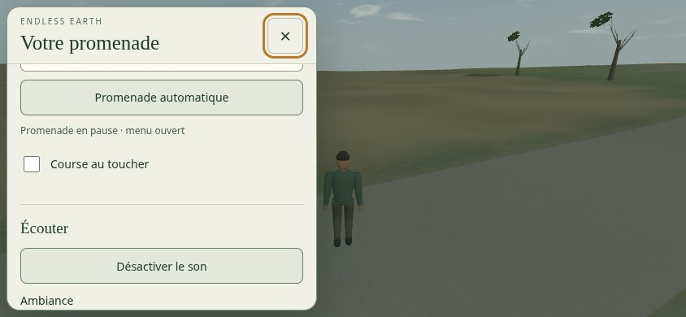
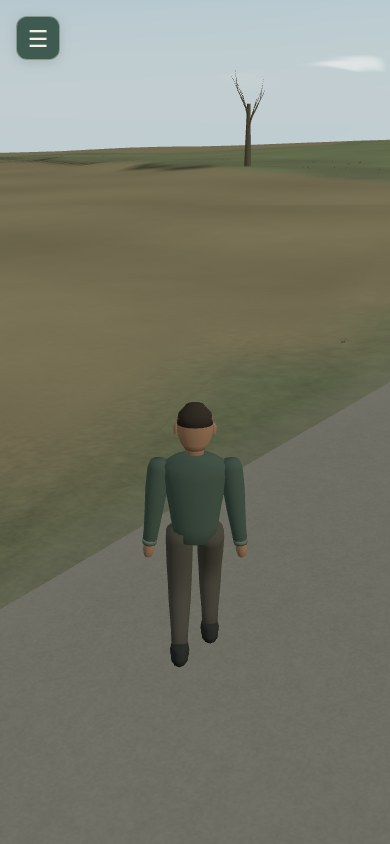
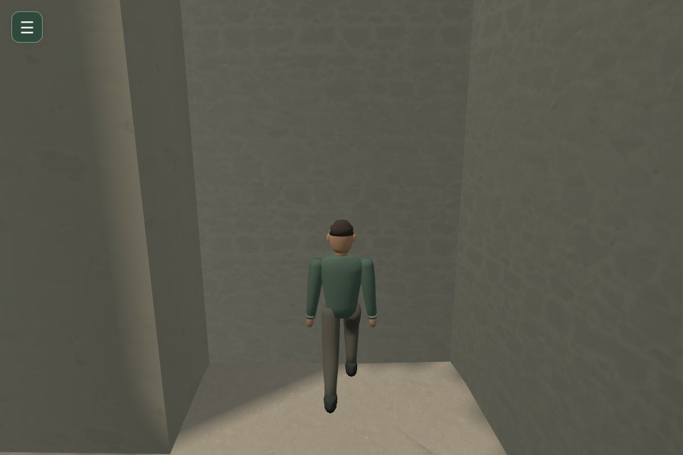

15C · Le promeneur et l’immersion
Prêt pour validation artistique. 15A et 15B acceptés. Arrêt avant 15D ; aucune fusion ni mise en ligne. Rapport complet · 15B · 15A.
Images du vrai moteur. Stations d’inspection séparées ; films natifs sans accélération, avec audio réel. Mesures logicielles SwiftShader, aucun FPS GPU physique ou Android revendiqué.

Marche, course, arrêt, pente et caméras
Menu unique et tactile

Menu ouvert · bureau
Menu · mobile
Menu · petit écran
Menu · paysage
Gestes tactiles · écran dégagé
Collision · jambes au reposPersonnage et trois profils
Variante d’éclairage étudiée
Prototype diagnostique, non retenu : retirer les ombres locales reçues par le corps ne gagne que 2,4 % dans ce passage logiciel. Le dépassement final de +10,5 % en forêt Équilibré reste soumis au propriétaire. 24 rendus supplémentaires.
Éclairage retenuPrototype sans ombres locales du corps
Contrôles
112 ouvertures, graines et positions · Clavier, quatre formats et multitouch · Collisions, rig et replis · 216 rendus appariés · CPU d’animation · Sources et droits · Paquets et décodage · Validation finale.
Le modèle et les contacts restent stylisés. Le terrain physique et les accès sont conservés. La décision artistique appartient au propriétaire.